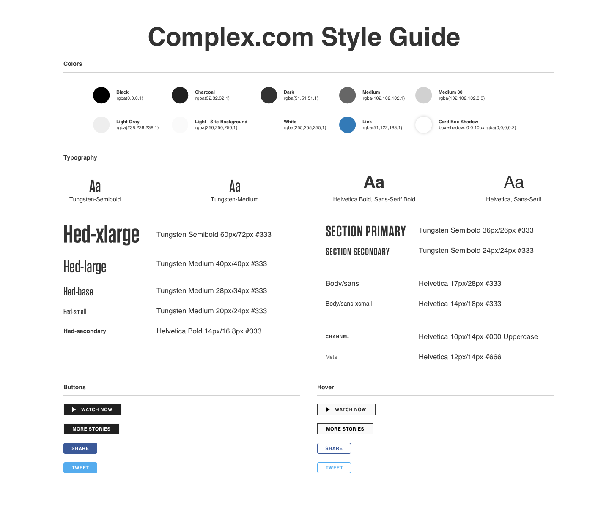
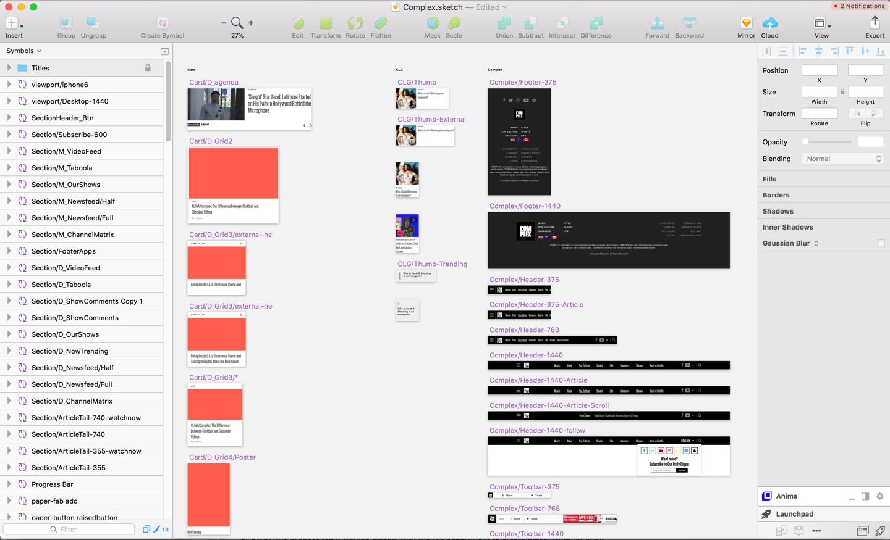

Complex Homepage
Year 2017
Client Complex Networks
With over 150 million monthly pageviews, Complex.com is a high traffic site with a lot of requirements. Throughout 2017, we made design updates to prepare for a full redesign for 2018.
Style Guide
My first goal was to update the design to dev workflow. The first step in migrating from Photoshop to Sketch was to take a comprehensive inventory of colors, font styles and components. From there, I learned that I needed to condense text styles, including font-families, colors, sizes, margins, etc.
Workflow
I built a symbol-filled Sketch template. Now we create designs in Sketch, export views to Zeplin where everything is measurable and assets are downloadable, and then share links in Jira.
Visual Updates
We removed channel color accents because they confused users and complicated css stylesheets. We aligned the entire site to a 1100px, 12 column-grid (an update we were able to make once the site stopped serving skin ads). We updated the header to reflect Complex's brand.
SEO Driven Updates
How many links can we get above the fold? We added modules that could be programmed by either ML or the SEO director.
Video Updates
We knew 40 shows were on their way to production. How do we make our internet series feel like SHOWS? The product team worked closely with the Art Department to create placements for show posters. We also created show templates and updated our blog-style video article templates to feel more cinematic.
Visit Complex.com to see these changes IRL
Have questions?
Let's Chat